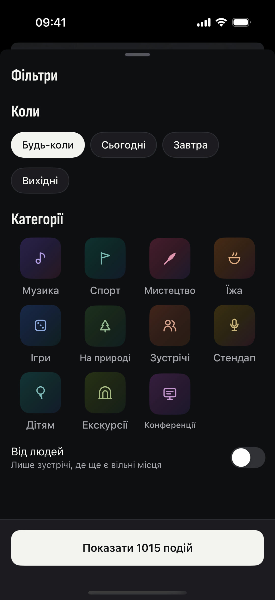
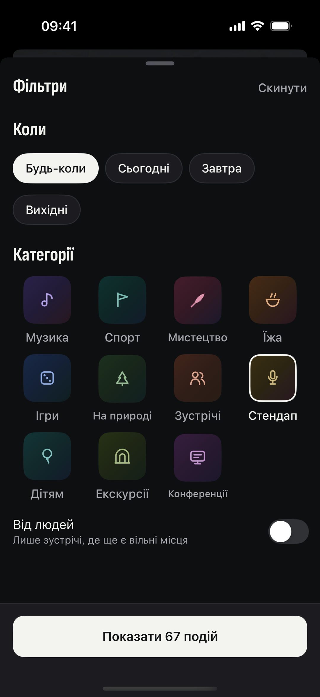

5 причин видалити20 каналів з афішами 🗑️
1/5
2/5
3/5
4/5
5/5
одна мапа замість каналів
фільтр за пару тапів
одразу в календар
стеж за улюбленим місцем
компанію можна зібрати
яка причина твоя? 👇
Поряд
Є куди. Буде з ким.
безкоштовно
Apple, логотип Apple і App Store є торговельними марками Apple Inc.
Google Play і логотип Google Play є торговельними марками Google LLC.